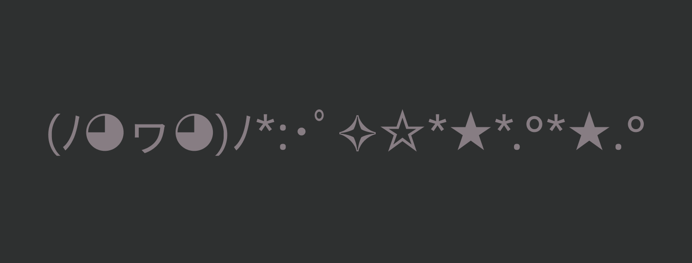
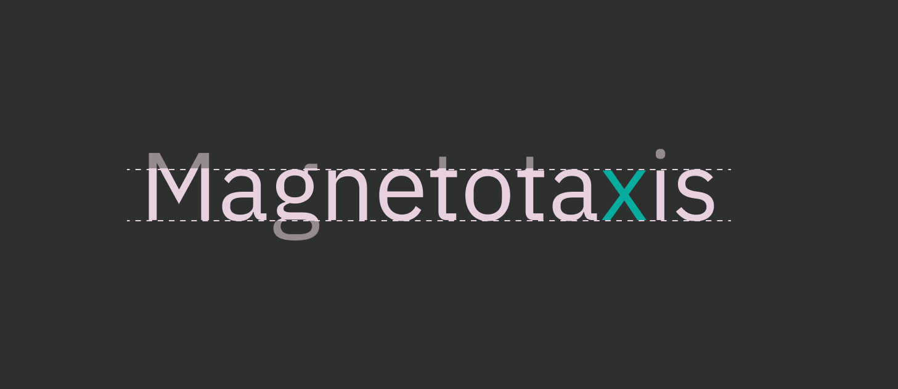

Accessibility and Typography
Tatiana Fokina, [meetup] #1, November 2, 2024.
Accessibility and typography

What is typography?
Typography is the way how the texts are
arranged and visually appealing.
Benefits of typography
- Increase accessibility and usability of your interfaces
- Set the right mood or tone
- Improve product and brand appearance
- Create a consistent brand identity.

Accessibility and usability
Usability is a measure of how effective, efficient, and
satisfying interfaces are.
Accessibility (a11y) focuses on the possibility to use interfaces
for people with disabilities first of all.

Accessibility in typography is about
visual clarity
Visual clarity
How easy to see and understand in design, clearly showing information.

How to measure clarity?
User-friendly typography based on two turtles — legibility and
readability.

Readability and legibility
Readability refers to how easy it is to read texts overall
Legibility refers to how easy to see, distinguish, and recognize
the characters and words.
Legibility components [1]
- Typeface.
- X-height.
- Counter.
- Letter spacing…
Legibility components [2]
- Distinct letterforms.
- Font size.
- Font weight.
- Line height.
- Contrast and color.
Legibility components [3]
-
Familiarity is the measure how much letter shapes is familiar
-
Character width is the overall width of every font characters.
-
Stroke contrast is differences between thick and thin strokes.
Typeface and font
-
Typeface is a family of related designs for text characters
(letters, numbers, and symbols)
-
Font is a specific version of a typeface with particular
characteristics including weight (bold or regular), style (italic or
normal), and size.
Typeface vs. font

Basic clear typefaces
- Arial,
- Calibri,
- Poppins,
- Tahoma,
- Verdana.
Special clear typefaces
Lexend and Atkinson Hyperlegible were created with
specific designs that are intended to be easier to read.

Dyslexia
This is a learning disability that affects
reading or writing skills. Unlike other learning
disabilities, intelligence isn't affected.

About 10% of the world's adults, or
750 million people, cannot read or write.
Dyslexia is a factor in 70% to 80% of these cases.
Main symptoms of dyslexia
- Read slowly.
- Find it hard to scan or skim text.
-
Confuse visually similar word like “cat” and “cot,” «голова» и
«глава».
- Problems with spelling.
- Find it hard to listen and maintain focus.
Dyslexia can appear differently and be more or less common depending on
the language rules and the writing system.
Language rules
The complexity of language depends on its spelling, grammar, and
pronunciation.
- Easier languages: Italian, German, etc.
- Harder languages: English, French, Russian, etc.
Writing system
Dyslexia can be affected by the type of writing system.
-
Albhabetic languages lead to trouble connecting sounds to
letters. Examples: English, Hiragana, Hangul.
-
Logographic languages involve problems with visual processing,
sound recognition, and memorizing characters. Examples: Chinese,
Kanji, Hanja.
Dyslexia-friendly typeface rules
- Plain and easy to read.
- Light or regular font weight.
- Lowercase letters.
- Distinct and wide letterforms.
- Moderately spaced characters.
Dyslexia-friendly typefaces [1]
All clear typefaces plus:
- Comic Sans,
- Omotype,
- OpenDyslexic,
- Open Sans,
- Read Regular…
Dyslexia-friendly typefaces [2]
- Roboto,
- Times New Roman üò®,
- Tiresias.
X-height
Height of lowercase letters in proportion to capital letters.

The optimal x-height for fonts is around
0.3 degree of visual arc (a measuring
of how much of field of view an object takes up.)
Counter
Partially or fully enclosed space within a letter or symbol.

Open and closed counters
-
Closed counters is completely enclosed spaces within letters.
-
Open counters have an opening aperture that connects to the
outside of the letters.

Clear spacing (open counter) between letters helps make
similar-looking letters (“c,” “e,” etc.) easier to tell apart.
Counters on practice (lathin)
Counters on practice (cyrillic)
Letter spacing (or tracking)
Horizontal spacing between all letters in a word or section of text.

More space between a letters helps with the readability of
all-caps text or
an extremely thin font.
Less letters space is legit only for a
very large font.
Letter spacing on practice
Appropriate letter spacing
Users preferences
Users can adjust text spacing via plagins to make it easier to read
because of their:
- Dyslexia
- Visual impairments
- Other personal preferences.
Support user-defined settings
Set these text style properties and ensure there is
no loss of content or functionality:
- Letter spacing to at least 0.12 times the font size
- Word spacing to at least 0.16 times the font size
- Line height to at least 1.5 times the font size
- Spacing following paragraphs to at least 2 times the font size.
Good example

It's no good

Distinct letterforms
üöß
Font size
Number of a typeface that measures the size of letters and other
characters on a screen.

Minimum font size is
16 pixels (12 points) and bigger for desktop
intarfaces and not below
12 pixels (9 points) for mobile interfaces.
Font weight
Thickness of the lines in each letter.
Contrast and color
the difference between text and background.
Readability components
- Legibility.
- Level of complexity of the text and its familiarity.
-
Consistency and hierarchy — consistent fonts and styles for
headings, body text.